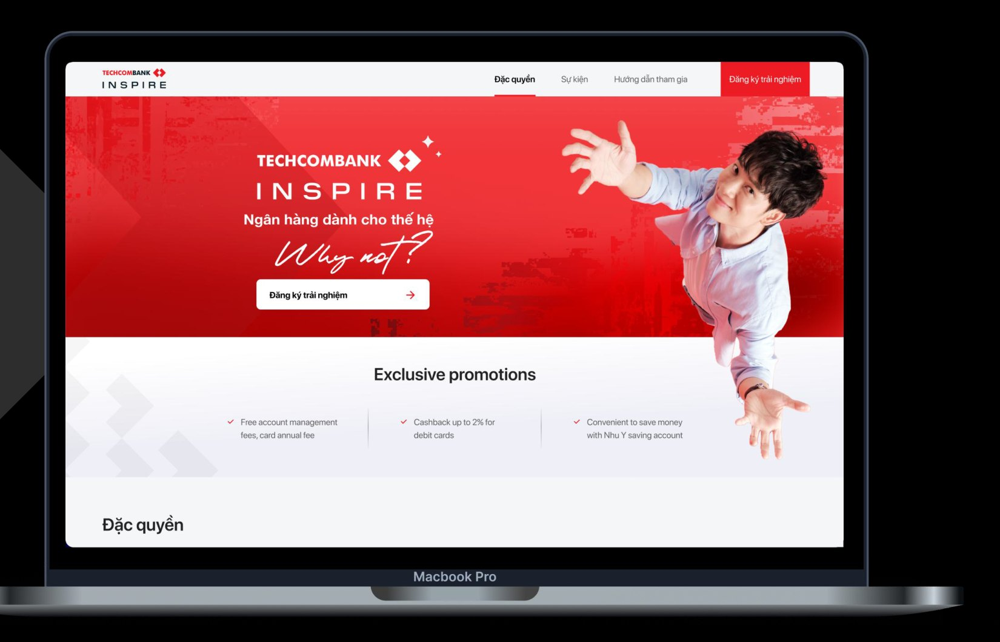
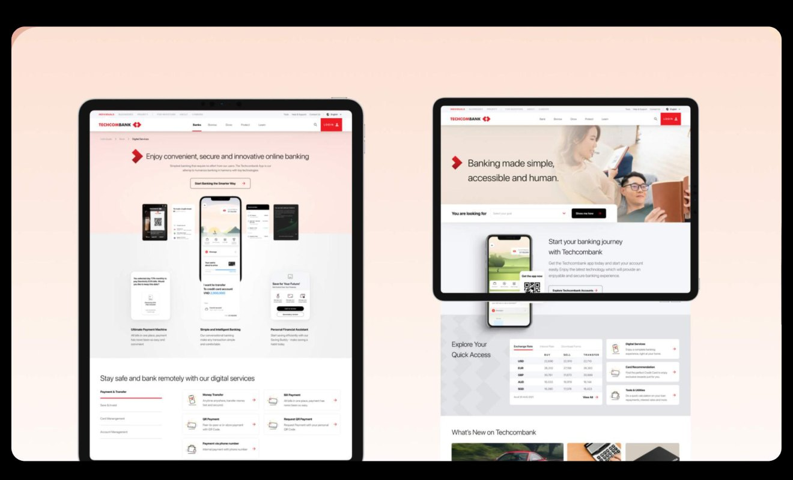

Techcombank

Trao quyền cho một ngân hàng bằng cách luôn đứng về phía người dùng.Empowering a bank by championing its users.
01 — Bối cảnh01 — ContextChange banking, change livesChange banking, change lives
Với tầm nhìn “Change banking, change lives”, Techcombank dẫn đầu chuyển đổi số trong ngành tài chính, giúp cá nhân, doanh nghiệp và tập đoàn phát triển hết tiềm năng.
Dự án tập trung vào user research, journey design và product design trên nền tảng web — xây dựng trải nghiệm số xoay quanh nhu cầu ngân hàng cốt lõi của người dùng.
With the vision “Change banking, change lives”, Techcombank leads the digital transformation of the financial industry, helping individuals, businesses and corporations reach their full potential.
The work centred on user research, journey design and product design for the web — digital experiences built around users’ core banking needs.
Hành trình được cải thiệnJourneys enhanced
Các luồng nghiệp vụ chính được thiết kế lại dựa trên insight người dùng.
Key journeys redesigned from user insight.
Vòng kiểm thửRounds of testing
Prototype nhanh và test liên tục để kiểm chứng từng quyết định.
Fast prototypes and continuous testing to validate every decision.
Người dùng được phỏng vấnUsers talked to
Lắng nghe trực tiếp người dùng thay vì phỏng đoán.
Listening to real users instead of guessing.
02 — Nguyên tắc02 — PrinciplesĐặt người dùng làm trung tâmUser-focused principles
Bước quan trọng nhất là thống nhất các nguyên tắc lấy người dùng làm trung tâm — motto, từ khoá và mục tiêu — làm kim chỉ nam cho mọi quyết định thiết kế trong suốt hành trình chuyển đổi số.
- Workshop cộng tác với stakeholder và các team liên quan.
- Prototype nhanh để biến ý tưởng thành thứ có thể test ngay.
- User testing nghiêm ngặt để đảm bảo sản phẩm thật sự đáp ứng các nguyên tắc đã đặt ra.
The single most important step was agreeing on user-focused principles — mottos, keywords and goals — to guide every design decision throughout the digital transformation.
- Collaborative workshops with stakeholders and partner teams.
- Fast prototyping to turn ideas into something testable straight away.
- Rigorous user testing to make sure the product truly lived up to those principles.
03 — Research03 — ResearchTiếng nói người dùng ngang hàng tầm nhìn stakeholderUsers’ voices, as loud as the stakeholders’
Dù là đánh giá cấu trúc thông tin của website, đưa ra quyết định thiết kế hay kiểm chứng một ý tưởng, tiếng nói của người dùng luôn được coi trọng ngang với tầm nhìn của stakeholder.
Một research hub làm việc song song với design squad để liên tục kiểm chứng quá trình thiết kế — không bao giờ quên mình đang xây sản phẩm cho ai.
Whether evaluating the website’s information architecture, making design decisions or validating an idea, users’ voices always carried as much weight as the stakeholders’ vision.
A research hub worked alongside the design squad to validate the design process continuously — never losing sight of who the product was for.
04 — Web app SME04 — SME web appÍt phân tâm hơn, nhiều thời gian kinh doanh hơnFewer distractions, more time for business
Nền tảng ngân hàng số trên web dành cho chủ doanh nghiệp SME được thiết kế để tối ưu hành trình và đơn giản hoá tương tác.
- Thống nhất ngôn ngữ, điểm chạm và tính nhất quán trong thiết kế.
- Giảm thời gian cho các tác vụ phức tạp, để chủ doanh nghiệp tập trung vận hành công việc.
- Cải tiến dựa trên insight từ dữ liệu.
The desktop web banking platform for SME owners was designed to optimise journeys and simplify interactions.
- Unified language, touchpoints and design consistency.
- Less time spent on complicated tasks, so owners can focus on running their business.
- Improvements driven by data insight.
05 — Website & thương hiệu05 — Website & brandNhất quán thương hiệu, sáng tạo trong từng chiến dịchBrand consistency, creativity in every campaign
Mình đảm bảo tính nhất quán thiết kế và chất lượng graphic trên website chính thức của Techcombank, với con mắt sắc bén về phân cấp thị giác, typography và brand alignment.
Mình xây dựng Techcombank Inspire từ con số 0 — ngôn ngữ hình ảnh, hệ thống layout và định hướng thẩm mỹ — cùng nhiều landing page chiến dịch, biến brief marketing thành visual thuyết phục và hướng chuyển đổi.
Dẫn dắt team UIUX phân tích, wireframe, lên ý tưởng và thiết kế cùng BA, Developer, Tester.
I ensured design consistency and delivered high-quality graphic design across Techcombank’s official website, with a sharp eye for visual hierarchy, typography and brand alignment.
I conceptualised and designed Techcombank Inspire from the ground up — visual language, layout system and aesthetic direction — and designed multiple campaign landing pages, turning marketing briefs into compelling, conversion-driven visuals.
I led the UIUX team through analysis, wireframes, ideation and design alongside BAs, developers and testers.

06 — The System06 — The SystemMột hệ thống, bảy lớpOne system, seven layers
Tính bền vững của sản phẩm đòi hỏi sự đầu tư, nhất quán và hiệu quả khi triển khai. Vì vậy, Design System được định nghĩa thành 7 lớp: màu số, bố cục, chuyển động, hành vi, component, ngôn ngữ và token — để mọi trang đều nói cùng một giọng thương hiệu và mọi thay đổi trong tương lai được triển khai nhanh, nhất quán.
Các ô bên dưới được dựng lại bằng code và có thể tương tác: thử bấm vào biểu tượng con mắt trong ô Behavior.
Product sustainability takes effort, consistency and efficient implementation. So the Design System was defined in seven layers — digital colour, composition, motion, behaviour, components, language and tokens — so every page speaks with one brand voice and future changes ship fast and consistently.
The tiles below are rebuilt in code and interactive: try the eye icon in the Behavior tile.
The
System.
Digital color
Composition
Motion
Behavior
Component
Language
Token
container-primaryI400container-secondaryI200container-disabledN400container-buttonN400